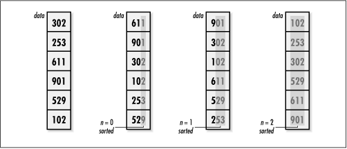

12.16 Implementation and Analysis
of Radix Sort
Radix sort
works fundamentally by applying counting sort one position at
a time to a set of data. In the implementation presented here,
data initially contains the unsorted set of
size integer elements stored in a single block
of contiguous storage. When rxsort returns, data
is completely sorted.
If we understand counting sort, the operation
of radix sort is simple. A single loop governs the position on
which we are currently sorting (see Example
12.7). Position by position, we apply counting sort to
shuffle and reshuffle the elements, beginning with the least
significant position. Once we have shuffled the elements by
the digits in the most significant position, sorting is
complete (see Figure
12.7). A simple approach involving exponentiation and
modular arithmetic is used to obtain each digit value. This
works well for integers. Different types of data require
different approaches. Some approaches may require considering
machine-specific details, such as byte ordering and word
alignment.

Not surprisingly, the runtime complexity of
radix sort depends on the stable
sorting algorithm chosen to sort the digits. Because radix
sort applies counting sort once for each of the p positions of digits in the data,
radix sort runs in p times the
runtime complexity of counting sort, or O (pn
+ pk). Its space requirement is
the same as for counting sort: two arrays of size n and an array of size k.
Example 12.7.
Implementation of Radix Sort /*****************************************************************************
* *
* ------------------------------- rxsort.c ------------------------------- *
* *
*****************************************************************************/
#include <limits.h>
#include <math.h>
#include <stdlib.h>
#include <string.h>
#include "sort.h"
/*****************************************************************************
* *
* -------------------------------- rxsort -------------------------------- *
* *
*****************************************************************************/
int rxsort(int *data, int size, int p, int k) {
int *counts,
*temp;
int index,
pval,
i,
j,
n;
/*****************************************************************************
* *
* Allocate storage for the counts. *
* *
*****************************************************************************/
if ((counts = (int *)malloc(k * sizeof(int))) == NULL)
return -1;
/*****************************************************************************
* *
* Allocate storage for the sorted elements. *
* *
*****************************************************************************/
if ((temp = (int *)malloc(size * sizeof(int))) == NULL)
return -1;
/*****************************************************************************
* *
* Sort from the least significant position to the most significant. *
* *
*****************************************************************************/
for (n = 0; n < p; n++) {
/**************************************************************************
* *
* Initialize the counts. *
* *
**************************************************************************/
for (i = 0; i < k; i++)
counts[i] = 0;
/**************************************************************************
* *
* Calculate the position value. *
* *
**************************************************************************/
pval = (int)pow((double)k, (double)n);
/**************************************************************************
* *
* Count the occurrences of each digit value. *
* *
**************************************************************************/
for (j = 0; j < size; j++) {
index = (int)(data[j] / pval) % k;
counts[index] = counts[index] + 1;
}
/**************************************************************************
* *
* Adjust each count to reflect the counts before it. *
* *
**************************************************************************/
for (i = 1; i < k; i++)
counts[i] = counts[i] + counts[i - 1];
/**************************************************************************
* *
* Use the counts to position each element where it belongs. *
* *
**************************************************************************/
for (j = size - 1; j >= 0; j--) {
index = (int)(data[j] / pval) % k;
temp[counts[index] - 1] = data[j];
counts[index] = counts[index] - 1;
}
/**************************************************************************
* *
* Prepare to pass back the data as sorted thus far. *
* *
**************************************************************************/
memcpy(data, temp, size * sizeof(int));
}
/*****************************************************************************
* *
* Free the storage allocated for sorting. *
* *
*****************************************************************************/
free(counts);
free(temp);
return 0;
}
|